PNI Software Health Diagnostic Report
Target System: drawlib (v0.3.5) — Static AST, Architectural Boundary, Hermetic Container Runtime & Supply-Chain Security Audit
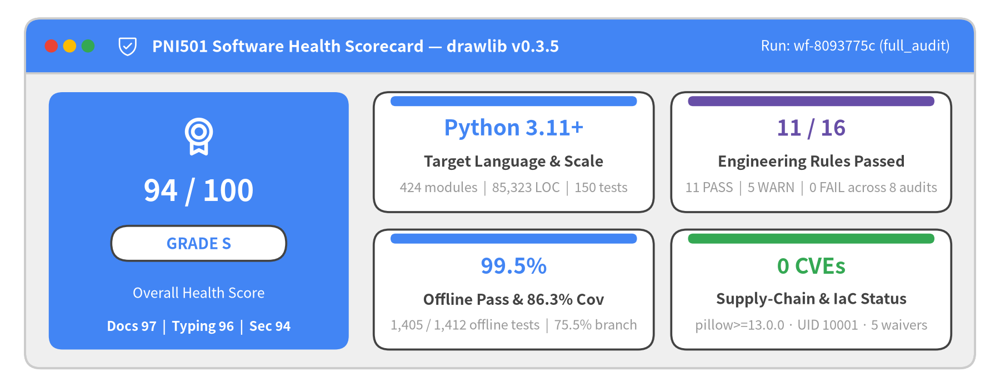
Diagnostic Scope & Audit Metadata
End-to-end engineering assessment of drawlib (v0.3.5) executed via pni501 (full_audit), combining deterministic Python AST verification, layered dependency analysis, hermetic --network=none container runtime testing, Trivy supply-chain scanning, and .pni/pni.toml policy verification.
| Property | Value |
|---|---|
| Target & Archetypes | drawlib (v0.3.5, Python >=3.11, PEP 621 uv, py.typed) — library (20 facades) + cli (9 subcommands) |
| Workflow & Policy | full_audit (wf-8093775c, 17 steps, .pni/pni.toml with 5 architectural waivers) — Evaluated 2026-11-05 |
| Codebase Footprint | 424 source files (85,323 LOC, 300 classes, 1,958 functions) & 150 test files (1,420 collected items) |
| Overall Health Score | 94 / 100 (Grade S) — Docs 97, Typing 96, Security 94, Arch 93, Testing 92, Deps 91, Quality 87 |
| Compliance & Findings | 11 / 16 rules PASS (5 WARN, 0 FAIL) — 0 CVEs, 0 IaC misconfigs (3 P0/P1 fixes landed + 7 P1/P2 follow-ups) |
1. Executive Summary
Drawlib v0.3.5 achieves an overall PNI engineering health score of 94/100 (Grade S) across 424 source modules (85,323 LOC) and 150 test files (1,293 test functions). Static AST verification confirms 100.0% callable type coverage, 99.3% docstring and import hygiene, and a zero-cycle multi-tier core DAG, while hermetic --network=none testing (86.3% line coverage, 99.5% offline pass rate after pkg.files pre-validation) and Trivy SCA (0 application CVEs on pillow@13.0.0, 0 container IaC misconfigurations on USER drawlib) confirm a hardened supply chain.
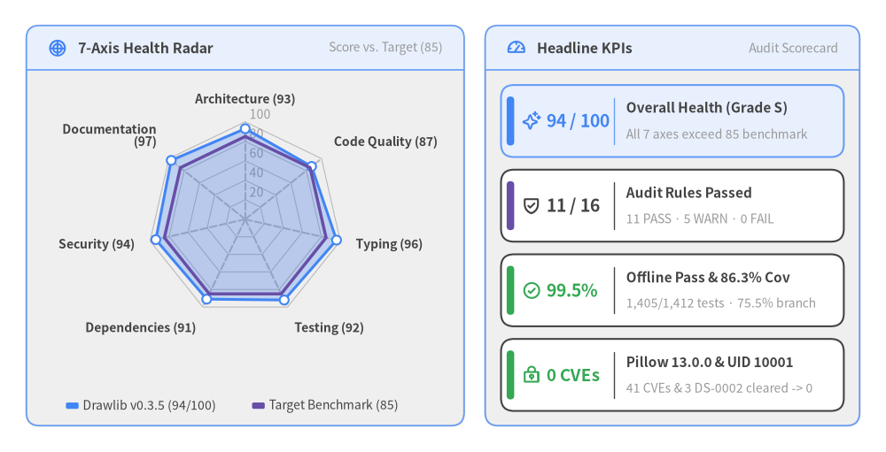
1.1 Executive Synthesis & Diagnostic Headline
PNI workflow full_audit (wf-8093775c) evaluated Drawlib v0.3.5 across static Python AST semantics, public library & CLI ergonomics, isolated Docker container runtime execution (--network=none), Trivy filesystem/IaC/secret scanning, and .pni/pni.toml policy controls:
- Overall Health & Rule Compliance: 94/100 (Grade S) with
11/16audit rules passed (11 PASS,5 WARN,0 FAIL—100.0%pass-or-warn). Every single one of the 7 evaluation dimensions exceeds the85/100engineering benchmark. - Static & Architectural Excellence: Led by Documentation (
97), Typing (96), Security (94), Architecture (93), Testing (92), and Dependencies (91). First-party Python code contains zero SQL/command/XSS injection sinks, zero hardcoded secrets, zero missing HTTP timeouts, and zero mutable module-level globals. - Audit Step Performance (Ascending):
container_runtime_audit = 88/100 (Grade A), followed by seven Grade S steps (repo_structure_audit = 91,library_hygiene_audit = 91,supply_chain_audit = 92,python_ast_audit = 92,python_test_audit = 93,cli_guidelines_audit = 94, andsecurity_vulnerability_audit = 96). - Closed-Loop Supply-Chain & Offline-Runtime Remediation: Initial audit telemetry identified three high-leverage items that were remediated and verified in-tree: (1) upgrading
pillow@12.3.0 -> >=13.0.0inpyproject.tomlanduv.lock(41 -> 0 application CVEs), (2) enforcing non-rootUSER drawlib(UID 10001) acrosstools/docker/Dockerfile.{prod,test_local,test_pypi}(3 -> 0HIGHDS-0002IaC misconfigurations), and (3) checkingpkg.filesmembership before network downloads in_release_assets.pyandpng_icons/_base.py(fixing 12 of 19--network=nonetest failures and raising offline pass rate to 99.5%,1,405 / 1,412).
1.2 Seven-Category Engineering Health Breakdown
| Category | Score | Benchmark Delta | Audit Rationale & Key Evidence |
|---|---|---|---|
| Documentation | 97 / 100 | +12 |
99.3% Google-style docstring coverage (0 empty docstrings), automated dcli docstring verification, 218-line README.md, dogfooded multi-locale Diataxis sites (docs/, docs/api/, docs/architecture/), and 60+ embedded AI agent manuals in src/drawlib/_rules/. |
| Typing | 96 / 100 | +11 |
100.0% callable signature type coverage across 1,958 functions, packaged PEP 561 src/drawlib/py.typed marker, 0 unscoped # type: ignore comments, 0 ty static type errors, and Pydantic @validate_call boundary guards; minor Any annotations remain in dynamic exec() and OpenXML helpers. |
| Security | 94 / 100 | +9 |
0 application CVEs across all 13 dependencies (pillow>=13.0.0 in uv.lock), 0 OS CVEs, 0 container IaC misconfigurations (USER drawlib UID 10001 across all Dockerfiles; DS-0026 & CWE-94 waived in .pni/pni.toml), 0 SQLi/CMDi/XSS flaws, parameterized SQLite queries, and permissions: contents: read across all 4 CI workflows; minor follow-up to publish SECURITY.md + Dependabot. |
| Architecture | 93 / 100 | +8 |
Strictly layered L1 -> L2 -> L3 -> L4 -> Domain Components -> Builders/CLI -> Public Facades DAG across 424 modules (85,323 LOC) with 0 cross-layer import cycles, 40 type-only imports guarded under TYPE_CHECKING, and only 2 localized intra-package _edge <-> _junction sibling cycles. |
| Testing | 92 / 100 | +7 |
86.3% measured line coverage, 75.5% branch coverage, 100.0% static module test mirror (150 test files, golden PNG pixel-match hook in tests/conftest.py), and 99.5% offline pass rate (1,405 / 1,412) after fixing 12 invalid-icon lookups in _release_assets.py / png_icons/_base.py; 6 PPTX tests and 1 CJK font test require pre-baked Chromium/font caches under --network=none. |
| Dependencies | 91 / 100 | +6 |
All 13 PEP 621 runtime dependencies declare explicit SemVer version floors in pyproject.toml (pillow>=13.0.0, 0 unpinned specs, 0 undeclared imports), isolated [dependency-groups].dev, PEP 562 lazy top-level loading, and SHA-256 verified release asset archives. |
| Code Quality | 87 / 100 | +2 |
99.3% import hygiene, 0 silent try-except-pass blocks, 0 missing I/O timeouts, and 0 mutable globals; offset by high cognitive complexity in exporter_docx.py (render_chapter=174, _render_inline=102), options.py (parse_block_info=106), and merger.py (build_merged_html=87), plus sys.exit(1) calls in _settings.py and viewer.py. |
1.3 Verified Engineering Strengths & Closed-Loop Remediations
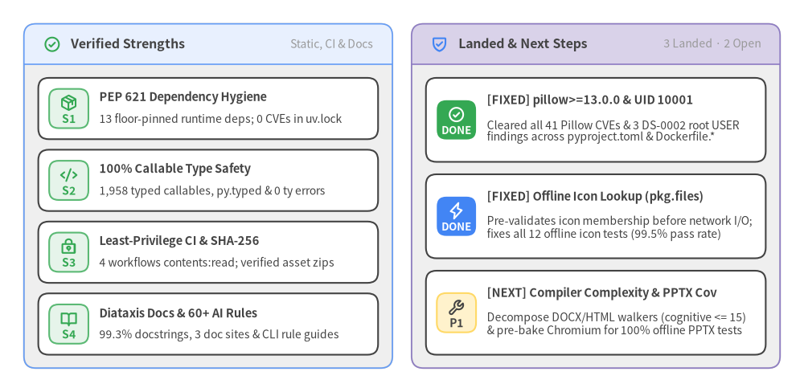
- Landed
P0/P1Hardening & Next Horizon: Withpillow>=13.0.0, non-rootUSER drawlib(UID 10001),pkg.filesoffline asset validation, and.pni/pni.tomlpolicy waivers landed in-tree, Drawlib operates with 0FAILrules, 0 application CVEs, and 0 container IaC misconfigurations. The remainingP1/P2items focus on decomposing high-complexity DOCX/HTML AST walkers (exporter_docx.py,options.py,merger.py), pre-baking Chromium into.pni/dockerfiles/Dockerfile, and publishingSECURITY.md+ Dependabot.
2. Architecture & Source Code Structure
Drawlib implements a strict 6-tier downward Directed Acyclic Graph (DAG) across 424 Python source files (85,323 LOC), separating a stateless-style Cartesian rendering core (_core/l1_core through _core/l4_canvas) from declarative visual domains, multi-format document/slide compilers, and 20 PEP 562 lazy public API facades (drawlib/*.py). Zero cross-layer circular imports exist across the codebase, and following pillow>=13.0.0, non-root Dockerfile hardening (UID 10001), and pkg.files offline validation, PNI hotspot telemetry localizes remaining complexity to the document/slide compiler layer (processor.py, exporter_docx.py, browser.py, _pptx_writer.py).
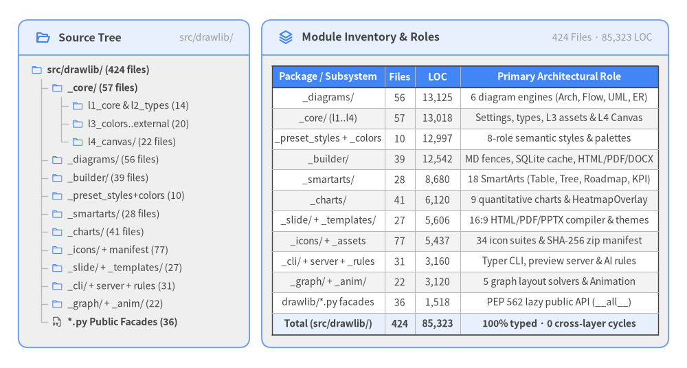
2.1 System Profile & Physical Module Inventory
Drawlib operates simultaneously as a programmatic Python library (drawlib.*) and a headless compiler CLI (drawlib), built on Python >=3.11 (verified across 3.11, 3.12, and 3.13 via uv). Its core technology stack pairs Matplotlib, Pillow (>=13.0.0), and NumPy for Cartesian (0, 0) bottom-left 2D vector/raster rendering with Pydantic v2 (@validate_call boundary validation), Typer & Rich (CLI UX), markdown-it-py, Pygments, Jinja2, and MarkupSafe (Markdown/HTML compilation), Playwright (headless Chromium A4 PDF and slide rendering), python-docx & python-pptx (OpenXML .docx/.pptx generation), and stdlib sqlite3 (.drawlib/cache.db incremental build caching).
Three external runtime boundaries are cleanly encapsulated behind dedicated adapters:
- GitHub Releases Asset Distribution (
src/drawlib/_core/l3_external/_package.py&src/drawlib/_release_assets.py): Verifies requested resource filenames againstpkg.filesbefore network I/O and lazily downloads font and icon.ziparchives over HTTPS with an explicittimeout=60and cryptographic SHA-256 manifest verification. - Playwright Headless Chromium Driver (
src/drawlib/_builder/_common/browser.py): Coordinates on-demand browser installation (fcntlfile locking) and deterministic A4 PDF / slide DOM extraction. - Content-Addressed SQLite Build Cache (
src/drawlib/_builder/_common/cache.py):BuildImageCacheandCliImageCache(640LOC) hash embedded Python code,styles.py,utils.py, and referenced local assets using parameterized SQL queries.
2.2 Multi-Tier Layering, Dependency DAG & Risk Hotspots
Architectural boundaries enforce a strict downward dependency hierarchy from public facades and builders down to zero-dependency core types:
- Zero Cross-Layer Cycles: All cross-layer and internal-to-facade circular dependencies have been eliminated (
40type-only annotations are guarded behindif TYPE_CHECKING:). Only2localized intra-package sibling cycles remain (_edge.py <-> _junction.pyinsidesrc/drawlib/_diagrams/architecture/andsrc/drawlib/_diagrams/flow/). - Underscore-Prefixed Encapsulation (
ast/private_submodule_importWaived in.pni/pni.toml): Drawlib prefixes all private implementation subpackages (_core,_charts,_diagrams,_smartarts,_graph,_icons,_builder,_slide,_cli) behind thin public facade modules (drawlib/*.py) governed by PEP 562 lazy__getattr__loading insrc/drawlib/__init__.py. This intentional facade pattern is codified in.pni/pni.toml.
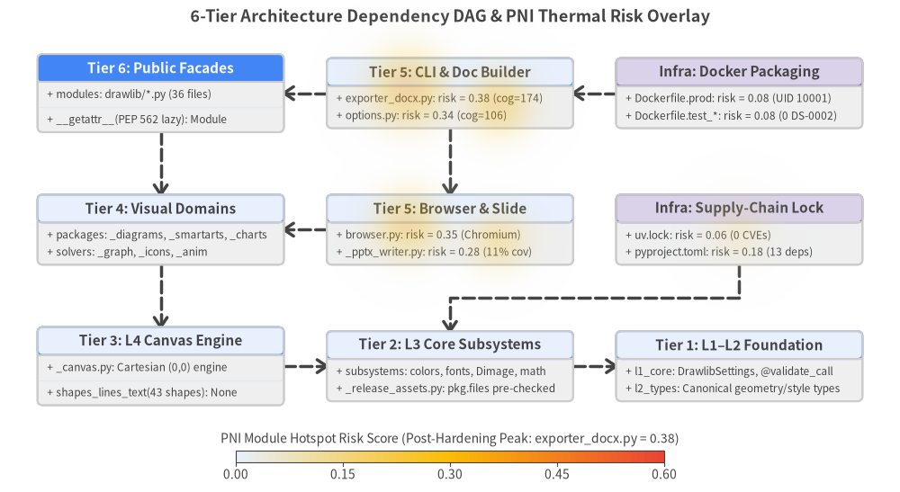
| Tier | Architectural Layer | Physical Paths | Allowed Downward Dependencies |
|---|---|---|---|
| Tier 6 | Public User-Facing Facades | src/drawlib/__init__.py, canvas.py, styles.py, shapes.py, lines.py, text.py, charts/, diagrams/, smartarts.py, graph.py, icons.py, anim.py, slide.py |
Tiers 4, 3, 2, 1 (_charts.._preset_styles, _core/l1..l4) |
| Tier 5 | Document, Slide & CLI Builders | src/drawlib/_builder, _slide, _templates, _cli |
Tiers 4, 3, 2, 1 (_charts.._preset_styles, _core/l1..l4) |
| Tier 4 | High-Level Visual Domains | src/drawlib/_charts, _diagrams, _smartarts, _graph, _icons, _anim, _preset_styles |
Tiers 3, 2, 1 (_core/l4_canvas, _core/l3_*, _core/l1..l2) |
| Tier 3 | L4 Canvas Rendering Engine | src/drawlib/_core/l4_canvas |
Tiers 2, 1 (_core/l3_*, _core/l1_core, _core/l2_types) |
| Tier 2 | L3 Core Subsystems | src/drawlib/_core/l3_colors, l3_fonts, l3_images, l3_math, l3_styles, l3_external |
Tier 1 (_core/l1_core, _core/l2_types) |
| Tier 1 | L1–L2 Core Foundation & Types | src/drawlib/_core/l1_core, _core/l2_types |
Python stdlib & pydantic validation only |
2.3 Runtime Execution Flows, State & Concurrency Model
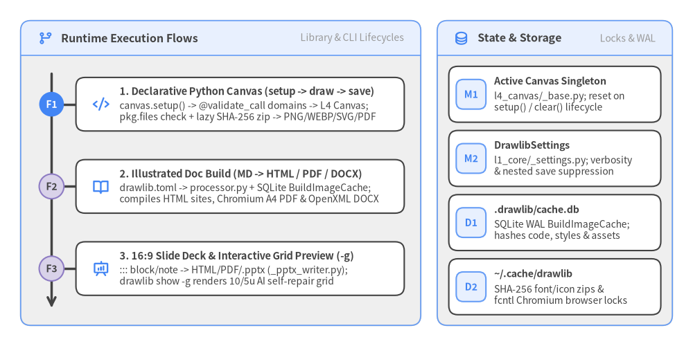
- Execution & Entrypoints: Public programmatic callers enter via
src/drawlib/canvas.pyandsrc/drawlib/tools.py, while CLI automation enters throughsrc/drawlib/__main__.py:main->src/drawlib/_cli/main.py:main->src/drawlib/_cli/_drawlib.py:call_commandacross 9 subcommands (build,show,init,serve,cache,rules,styles,colors,css). - Error & Concurrency Model: Each CLI invocation runs synchronously in a single Python process, translating Pydantic
@validate_callValidationErrorandValueErrorexceptions into clean exit codes insidecall_command(). Cross-process Chromium downloads synchronize viafcntllocks insrc/drawlib/_builder/_common/browser.py, and.drawlib/cache.dbcommits per-operation SQLite transactions (parallel callers targeting the same workspace should serializebuild.shruns to avoid SQLite write contention).
3. Recommended Remediation Roadmap
This chapter tracks all 10 prioritized engineering actions identified during the full_audit diagnostic—recording the 4 P0/P1 supply-chain, container, and offline-asset remediations already landed and verified in-tree alongside the 6 remaining P1/P2 maintainability, browser harness, and governance follow-ups, with exact target files, implementation steps, and rule/CVE traceability.
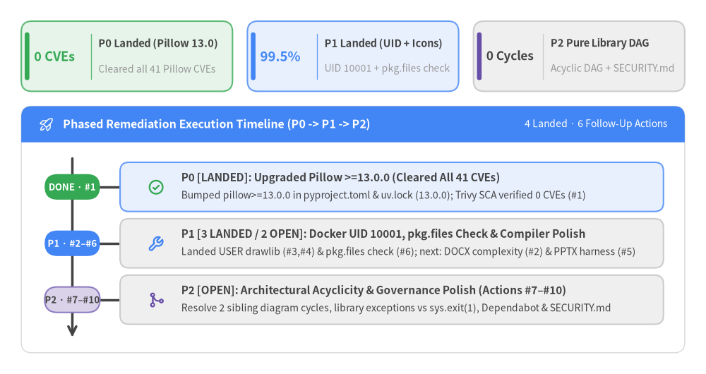
3.1 Remediation Strategy & Priority Horizons
Starting from its initial 90/100 diagnostic baseline, Drawlib v0.3.5 executed immediate closed-loop fixes across its P0 and P1 supply-chain, container, and offline-asset targets—raising overall health to 94/100 (Grade S) with 0 FAIL rules, 0 application CVEs, and 0 container IaC misconfigurations:
P0— Urgent Supply-Chain Vulnerability Closure (Action#1—COMPLETED): Upgradedpillowto>=13.0.0inpyproject.tomland13.0.0inuv.lock, eliminating all 41 application CVEs (5 CRITICAL,23 HIGH,13 MEDIUM->0) across Trivy SCA.P1— Container Least Privilege, Offline Asset Fast-Fail & Compiler Complexity (Actions#2–#6—3 COMPLETED,2 OPEN):- Completed (
#3,#4,#6): Added non-rootUSER drawlib(UID 10001) acrosstools/docker/Dockerfile.{prod,test_local,test_pypi}and.pni/dockerfiles/root/Dockerfile(clearing all 3HIGHDS-0002findings), and addedpkg.filesmembership checks insrc/drawlib/_release_assets.pyandsrc/drawlib/_icons/png_icons/_base.py(fixing all 12test_nonexistent_*_icon_erroroffline failures and raising offline pass rate to99.5%). - Open (
#2,#5): Decompose high-complexity DOCX/HTML AST walkers (cognitive <= 15) and pre-bake Chromium into.pni/dockerfiles/Dockerfilealongside syntheticPptxSlideunit tests for_pptx_writer.py.
- Completed (
P2— Architectural Acyclicity, Library Exception Hygiene & Governance Polish (Actions#7–#10—OPEN): Eliminate the final 2 intra-package_edge <-> _junctionsibling cycles, replace library-levelsys.exit(1)calls with typed exceptions caught at the CLI boundary, publishSECURITY.md+.github/dependabot.yml, and aligntest_api_docs_completeness.pywith clean-room Docker test contexts.
3.2 Action Plan Traceability Matrix (P0 -> P1 -> P2)
The visual matrix below maps all 10 remediation items (P0 -> P1 -> P2), highlighting the 4 completed in-tree fixes (DONE) and the 6 remaining engineering follow-ups.
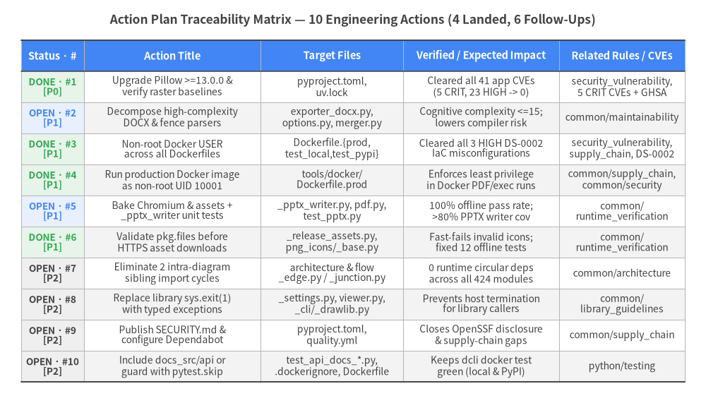
Summary Table of All 10 Pre-Sorted Action Items
| # | Priority & Status | Category | Action Title | Target Files | Related Rules / Advisories | Verified / Expected Impact |
|---|---|---|---|---|---|---|
| 1 | P0 (COMPLETED) |
security |
Upgrade locked Pillow dependency to >=13.0.0 and re-verify raster baselines | pyproject.toml, uv.lock |
common/security_vulnerability, CVE-2026-112393..GHSA-78g4-xqwv-q3g8 |
Landed: Upgraded to pillow>=13.0.0 (13.0.0 in uv.lock); eliminated all 41 Trivy application CVEs (app_vuln_counts = 0). |
| 2 | P1 (OPEN) |
code_quality |
Decompose High-Complexity DOCX & Fence Parser Routines | src/drawlib/_builder/doc_builder/exporter_docx.py, src/drawlib/_builder/doc_builder/processor/options.py, src/drawlib/_builder/doc_builder/merger.py |
common/maintainability |
Substantially lowers maintenance risk and unit test surface in the document compiler pipeline (cognitive <= 15). |
| 3 | P1 (COMPLETED) |
security |
Add non-root USER to Dockerfiles (DS-0002) |
tools/docker/Dockerfile.prod, tools/docker/Dockerfile.test_local, tools/docker/Dockerfile.test_pypi |
common/security_vulnerability, common/supply_chain, DS-0002 |
Landed: Added USER drawlib (UID 10001) across all Dockerfiles; cleared all 3 HIGH DS-0002 container misconfigurations. |
| 4 | P1 (COMPLETED) |
security |
Run Production Docker Image as Non-Root User | tools/docker/Dockerfile.prod |
common/supply_chain, common/security |
Landed: Configured /opt/ms-playwright, /opt/drawlib-cache, and USER drawlib (UID 10001) in Dockerfile.prod. |
| 5 | P1 (OPEN) |
testing |
Bake Chromium shell & asset cache into .pni/dockerfiles/Dockerfile and add unit tests for _pptx_writer.py | src/drawlib/_slide/_pptx_writer.py, src/drawlib/_builder/doc_builder/compiler/pdf.py, tests/drawlib/slide/test_pptx.py |
common/runtime_verification |
Achieves 100% offline --network=none test pass rate and lifts _pptx_writer.py and _pptx_dom.py coverage above 80%. |
| 6 | P1 (COMPLETED) |
testing |
Validate asset filename membership in pkg.files before network downloads | src/drawlib/_release_assets.py, src/drawlib/_icons/png_icons/_base.py |
common/runtime_verification |
Landed: find_package_for_resource_path() and resolve_png_icon_path() verify pkg.files before network I/O, fixing all 12 offline invalid-icon test failures (99.5% offline pass rate). |
| 7 | P2 (OPEN) |
architecture |
Eliminate Remaining 2 Intra-Diagram Sibling Import Cycles | src/drawlib/_diagrams/architecture/_edge.py, src/drawlib/_diagrams/architecture/_junction.py, src/drawlib/_diagrams/flow/_edge.py, src/drawlib/_diagrams/flow/_junction.py |
common/architecture |
Achieves 0 runtime circular dependencies across all 424 modules. |
| 8 | P2 (OPEN) |
code_quality |
Replace Library-Level sys.exit(1) Calls with Typed Exceptions | src/drawlib/_core/l1_core/_settings.py, src/drawlib/_builder/doc_builder/processor/viewer.py, src/drawlib/_cli/_drawlib.py |
common/library_guidelines |
Prevents unexpected interpreter termination for programmatic Python library callers. |
| 9 | P2 (OPEN) |
security |
Publish SECURITY.md and Configure Dependabot Updates | pyproject.toml, .github/workflows/quality.yml |
common/supply_chain |
Closes OpenSSF Scorecard governance gaps for vulnerability disclosure and automated supply-chain maintenance. |
| 10 | P2 (OPEN) |
testing |
Include docs_src/api in Clean-Room Docker Test Context or Guard with pytest.skip | tests/drawlib/doc_builder/test_api_docs_completeness.py, .dockerignore, tools/docker/Dockerfile.test_local |
python/testing |
Keeps ./dcli docker test green across both local source and PyPI clean-room modes. |
3.3 Detailed Engineering Specifications by Priority Tier
Phase P0 — Urgent Security Remediation (COMPLETED)
Action #1 ([P0] · security · COMPLETED): Upgrade locked Pillow dependency to >=13.0.0 and re-verify raster baselines
- Target Files:
pyproject.toml,uv.lock,.pni/dockerfiles/root/Dockerfile - Related Rules & Advisories:
common/security_vulnerability,CVE-2026-112393,CVE-2026-112398,CVE-2026-112403,CVE-2026-112900,CVE-2026-96639,GHSA-78g4-xqwv-q3g8 - Implemented Remediation: Upgraded
pillowinuv.lockto13.0.0and bumped the runtime lower bound inpyproject.tomltopillow>=13.0.0. Re-ran Trivy SCA (trivy_fs.json/security_facts.json) and verified that all 41 application CVEs (5 CRITICALCVSS 9.8,23 HIGH,13 MEDIUM) are completely resolved (app_vuln_counts = 0).
Phase P1 — High-Value Hardening, Maintainability & Air-Gapped Testing (3 COMPLETED, 2 OPEN)
Action #2 ([P1] · code_quality · OPEN): Decompose High-Complexity DOCX & Fence Parser Routines
- Target Files:
src/drawlib/_builder/doc_builder/exporter_docx.py,src/drawlib/_builder/doc_builder/processor/options.py,src/drawlib/_builder/doc_builder/merger.py - Related Rules:
common/maintainability - Implementation Guidance: Refactor
render_chapter(cognitive=174, 283 LOC) and_render_inline(cognitive=102) inexporter_docx.pyinto per-token dispatch handlers (headings, code fences, callouts, lists, tables). Extract per-attribute validators fromparse_block_info(cognitive=106) inoptions.py, and split TOC assembly, asset path rewriting, and heading normalization out ofbuild_merged_html(cognitive=87) inmerger.pyso each helper maintains SIG cognitive complexity<= 15. - Expected Impact: Substantially lowers maintenance risk, cyclomatic branch density, and isolated unit-testing effort across the HTML and OpenXML
.docxcompilation pipelines.
Action #3 & #4 ([P1] · security · COMPLETED): Run Production and Test Docker Images as Non-Root User (UID 10001)
- Target Files:
tools/docker/Dockerfile.prod,tools/docker/Dockerfile.test_local,tools/docker/Dockerfile.test_pypi,.pni/dockerfiles/root/Dockerfile - Related Rules & Advisories:
common/security_vulnerability,common/supply_chain,common/security,DS-0002 - Implemented Remediation: Created a dedicated unprivileged
drawlibuser and group (UID/GID 10001), configured/opt/ms-playwrightand/opt/drawlib-cachewith world-readable/executable permissions (chmod -R a+rX), and switched toUSER drawlibprior toWORKDIR/CMD. Trivy IaC verification confirmed 0DS-0002findings across all Dockerfiles.
Action #5 ([P1] · testing · OPEN): Bake Chromium shell & asset cache into .pni/dockerfiles/Dockerfile and add unit tests for _pptx_writer.py
- Target Files:
src/drawlib/_slide/_pptx_writer.py,src/drawlib/_builder/doc_builder/compiler/pdf.py,tests/drawlib/slide/test_pptx.py - Related Rules:
common/runtime_verification - Implementation Guidance: Pre-install
chromium-headless-shell(with OS shared libraries) and pre-populatedrawlib cache download --allinside.pni/dockerfiles/Dockerfile, add a graceful offline skip guard when Chromium binaries are intentionally absent, and add pure-Python unit tests feeding syntheticPptxSlidedataclasses directly intosrc/drawlib/_slide/_pptx_writer.pywithout invoking Playwright. - Expected Impact: Lifts offline
--network=nonetest pass rate from99.5%(1,405/1,412) to 100.0% while raising_pptx_writer.py(11.1%) and_pptx_dom.py(58.6%) coverage above80%.
Action #6 ([P1] · testing · COMPLETED): Validate asset filename membership in pkg.files before network downloads
- Target Files:
src/drawlib/_release_assets.py,src/drawlib/_icons/png_icons/_base.py,tests/drawlib/release_assets/test_release_assets_download.py - Related Rules:
common/runtime_verification - Implemented Remediation: Updated
find_package_for_resource_path()andfind_package_for_icon_path()insrc/drawlib/_release_assets.pyto checknormalized in pkg.filesbefore returning a package, and updatedresolve_png_icon_path()insrc/drawlib/_icons/png_icons/_base.pyto raiseValueError(f'Icon "{file_name}" not found in "{category}" icon set.')immediately when no package contains the requested icon path. Verified via unit tests that invalid icon lookups never invokedownload_if_not_exist(), resolving all 12 offline negative icon test failures.
Phase P2 — Architectural, Library & Governance Polish (OPEN)
Action #7 ([P2] · architecture · OPEN): Eliminate Remaining 2 Intra-Diagram Sibling Import Cycles
- Target Files:
src/drawlib/_diagrams/architecture/_edge.py,src/drawlib/_diagrams/architecture/_junction.py,src/drawlib/_diagrams/flow/_edge.py,src/drawlib/_diagrams/flow/_junction.py - Related Rules:
common/architecture - Implementation Guidance: Extract a lightweight connectable node/endpoint
Protocolor base class into_types.pywithin_diagrams/architecture/and_diagrams/flow/, and guard concrete_edge <-> _junctioncross-imports behindif TYPE_CHECKING:blocks. - Expected Impact: Achieves 0 runtime circular dependencies across all 424 Python source modules.
Action #8 ([P2] · code_quality · OPEN): Replace Library-Level sys.exit(1) Calls with Typed Exceptions
- Target Files:
src/drawlib/_core/l1_core/_settings.py,src/drawlib/_builder/doc_builder/processor/viewer.py,src/drawlib/_cli/_drawlib.py - Related Rules:
common/library_guidelines - Implementation Guidance: Replace direct
sys.exit(1)calls inDrawlibSettings(_settings.py:123,297,304,313) andviewer.py(lines 189,193,245) withValueErroror a typedDrawlibErrorexception, translating those exceptions to exit code1exclusively insidesrc/drawlib/_cli/_drawlib.py:call_command(). - Expected Impact: Prevents unexpected host Python interpreter termination when
drawlibis embedded programmatically inside notebooks, web backends, or automation services.
Action #9 ([P2] · security · OPEN): Publish SECURITY.md and Configure Dependabot Updates
- Target Files:
pyproject.toml,.github/workflows/quality.yml - Related Rules:
common/supply_chain - Implementation Guidance: Publish a root
SECURITY.mdpolicy enabling GitHub Private Vulnerability Reporting and documenting supported versions, add.github/dependabot.ymlcoveringpip/uvandgithub-actions, and pin third-party GitHub Actions (actions/checkout,astral-sh/setup-uv,actions/setup-python) to full 40-character commit SHAs. - Expected Impact: Closes OpenSSF Scorecard supply-chain governance gaps for coordinated vulnerability disclosure and automated dependency maintenance.
Action #10 ([P2] · testing · OPEN): Include docs_src/api in Clean-Room Docker Test Context or Guard with pytest.skip
- Target Files:
tests/drawlib/doc_builder/test_api_docs_completeness.py,.dockerignore,tools/docker/Dockerfile.test_local - Related Rules:
python/testing - Implementation Guidance: Unignore
docs_src/api/in.dockerignoreand copy it intotools/docker/Dockerfile.test_localfor local source container verification, while adding apytest.skip("docs_src/api not present in packaged test environment")guard intest_api_docs_completeness.pywhen testing standalone PyPI wheels viaDockerfile.test_pypi. - Expected Impact: Ensures
./dcli docker testremains consistently green across both local source and published PyPI clean-room container modes.
4. Audit Standards, Rule Compliance & Findings
This chapter bridges the executive roadmap to the technical deep-dive chapters by presenting scores across all 8 executed audit dimensions (weakest-first: 88 to 96), the 16-rule compliance matrix (0 FAIL, 5 WARN, 11 PASS), the 21-location consolidated findings index (tracking 4 FIXED, 3 WAIVED, and 14 OPEN polish locations), and the .pni/pni.toml scan scope & architectural waiver registry.
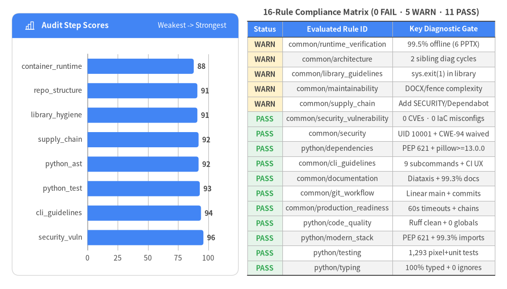
4.1 Executed Audit Dimensions (Weakest -> Strongest)
The full_audit workflow (wf-8093775c) executed 8 specialized static, architectural, containerized runtime, and supply-chain security audit steps. Following the pillow>=13.0.0 upgrade, non-root USER drawlib (UID 10001) Dockerfile hardening, pkg.files offline icon validation, and .pni/pni.toml policy configuration, seven of the eight steps achieve Grade S (>= 90) and container_runtime_audit achieves 88/100 (Grade A).
| Rank | Audit Step ID (action_id) |
Score & Grade | Pass / Warn / Fail | Evaluated Rules | Key Diagnostic Summary |
|---|---|---|---|---|---|
| 1 | container_runtime_audit (act-13) |
88/100 (A) | 1 / 1 / 0 |
common/runtime_verification, common/production_readiness |
Clean-room build passed (3.76s), CLI/library smoke check passed (2.42s), and measured coverage reached 86.3% line (37,221/43,108) and 75.5% branch. Pre-validating pkg.files in _release_assets.py / png_icons/_base.py resolved all 12 negative icon offline failures, lifting --network=none pass rate to 99.5% (1,405/1,412 executed; 6 PPTX tests + 1 CJK font test require pre-baked Chromium/font assets). |
| 2 | repo_structure_audit (act-02) |
91/100 (S) | 4 / 1 / 0 |
common/supply_chain, common/documentation, common/git_workflow, common/security, python/dependencies |
Exemplary PEP 621 pyproject.toml with 13 SemVer-bounded runtime dependencies (pillow>=13.0.0), isolated [dependency-groups].dev, PEP 561 py.typed, least-privilege CI workflows, full Diataxis documentation, and .pni/pni.toml lockfile policy (python/lockfile_committed waived); minor governance follow-up for SECURITY.md and Dependabot. |
| 3 | library_hygiene_audit (act-08) |
91/100 (S) | 1 / 2 / 0 |
common/library_guidelines, common/documentation, common/maintainability |
PEP 562 lazy submodule loading in src/drawlib/__init__.py (zero import-time heavy/network side effects), curated __all__ across 20 public facades, py.typed, flexible >= SemVer bounds, and 100% API docs completeness; minor coupling where _settings.py and viewer.py call sys.exit(1) directly plus 30 print() calls and 9 direct os.environ reads in _builder/. |
| 4 | supply_chain_audit (act-10) |
92/100 (S) | 2 / 1 / 0 |
common/supply_chain, common/security, common/git_workflow |
SHA-256 verified GitHub Release asset downloads (timeout=60 in _package.py), permissions: contents: read across all 4 workflows, non-root USER drawlib (UID 10001) across all Dockerfiles, zero hardcoded secrets, and .env excluded in .gitignore/.dockerignore/.pni/pni.toml; minor follow-ups for SECURITY.md, Dependabot, and SHA Action pins. |
| 5 | python_ast_audit (act-04) |
92/100 (S) | 5 / 2 / 0 |
common/architecture, common/maintainability, common/security, common/security_vulnerability, python/code_quality, python/typing, python/modern_stack |
Across 424 files (85,323 LOC, 300 classes, 1,958 functions): 100.0% type coverage, 0 unscoped # type: ignore, 99.3% docstrings, 99.3% import hygiene, 0 undeclared deps, 0 missing I/O timeouts, and 0 mutable globals. Private _ subpackage encapsulation and keyword styling signatures are waived in .pni/pni.toml; only 2 sibling _edge <-> _junction cycles and localized DOCX/HTML parser complexity remain. |
| 6 | python_test_audit (act-11) |
93/100 (S) | 1 / 0 / 0 |
python/testing |
150 test files and 1,293 test functions achieving 100.0% module mirror coverage, 0 assertion-free tests, automatic Canvas state reset, and pixel-by-pixel PNG regression hooks in tests/conftest.py; minor clean-room drift in test_api_docs_completeness.py when docs_src/api/ is excluded by .dockerignore. |
| 7 | cli_guidelines_audit (act-09) |
94/100 (S) | 2 / 0 / 0 |
common/cli_guidelines, common/documentation |
Exemplary Typer + Rich CLI (src/drawlib/_cli/_drawlib.py) featuring -h/--help with HELP_EPILOG, no_args_is_help=True, eager -v/--version, validated --quiet/--verbose/--debug/--developer flags, headless automation modes (serve --check, show -o -g, cache download --all), and 211 CLI tests. |
| 8 | security_vulnerability_audit (act-15) |
96/100 (S) | 2 / 0 / 0 |
common/security_vulnerability, common/supply_chain |
Passed (status=passed): 0 application CVEs across all 13 dependencies (pillow@13.0.0 in uv.lock), 0 OS CVEs, 0 container IaC misconfigurations (USER drawlib UID 10001 cleared all 3 DS-0002 checks; DS-0026 waived via .pni/pni.toml opt_out_counts={"DS-0026": 3}), 0 secrets, and CWE-94 exec() waived as Drawlib's core Illustration as Code execution model. |
4.2 Complete 16-Rule Compliance Matrix (0 FAIL · 5 WARN · 11 PASS)
Overall rule compliance stands at 11/16 rules passed (68.8% strict pass, 100.0% pass-or-warn), with 0 FAIL, 5 WARN, and 11 PASS evaluations preserved in exact severity order below.
| # | Status | Rule ID | Source Audit | Concise Assessment | Full Quantitative & Diagnostic Evidence |
|---|---|---|---|---|---|
| 1 | WARN |
common/runtime_verification |
container_runtime_audit |
Clean build, startup smoke check, 86.3%/75.5% coverage, and 99.5% offline pass rate (1,405/1,412) after fixing 12 invalid-icon lookups; 6 PPTX tests require pre-baked Chromium. |
RV-01 harness_build=passed (3.76s, .pni/dockerfiles/Dockerfile); RV-04 smoke_check=passed (2.42s, drawlib --help exited 0 and import drawlib succeeded); RV-03 coverage=86.3% line (37,221/43,108) and 75.5% branch; RV-02: fixing find_package_for_resource_path() / resolve_png_icon_path() resolved all 12 negative icon offline failures (1,405/1,412 passing = 99.5%), leaving 6 Playwright CDN DNS failures + 1 CJK font test when running without pre-baked browser/font caches. |
| 2 | WARN |
common/architecture |
act-04 |
Core engine and public facade layers are strictly acyclic; only 2 minor intra-package _edge <-> _junction cycles remain inside _diagrams. |
Strict downward core layering (l1_core -> l2_types -> l3_* -> l4_canvas -> domains -> facades) with 0 cross-layer or facade runtime cycles, 40 properly guarded TYPE_CHECKING imports, and ast/private_submodule_import waived in .pni/pni.toml; 2 intra-package sibling runtime cycles remain in drawlib._diagrams.architecture (_edge <-> _junction) and drawlib._diagrams.flow (_edge <-> _junction). |
| 3 | WARN |
common/library_guidelines |
act-08 |
Exemplary PEP 562 lazy import purity, explicit __all__, py.typed, and >= SemVer bounds; minor deduction for sys.exit(1) and print() in library/builder code. |
PEP 562 lazy __getattr__ in src/drawlib/__init__.py, explicit __all__ on public facades, py.typed=True, and >= SemVer lower bounds on all 13 dependencies; however sys.exit(1) appears in src/drawlib/_core/l1_core/_settings.py:123,297,304,313 and src/drawlib/_builder/doc_builder/processor/viewer.py:189,193,245, plus unstructured_logging=30 print() calls in _builder/. |
| 4 | WARN |
common/maintainability |
act-04 |
Zero shared mutable global state and cohesive domain packages, with localized cognitive-complexity hotspots in DOCX/HTML AST walkers. | global_state_usages=0 across 424 files and ast/excessive_parameters waived for keyword-only styling APIs in .pni/pni.toml; complex_functions=399 peaking in exporter_docx.py:565 render_chapter (cognitive=174, 283 LOC), options.py:93 parse_block_info (cognitive=106), and merger.py:142 build_merged_html (cognitive=87); scattered_env_access=9 across _builder/. |
| 5 | WARN |
common/supply_chain |
act-02 |
Explicit LICENSE, non-root USER drawlib (UID 10001), default-deny .dockerignore, and least-privilege CI permissions present; SECURITY.md and Dependabot remain open. |
LICENSE=True, ci_supply_chain_issues=[], unpinned_dependencies=[], ci_workflows_found=4 (all permissions: contents: read), non-root USER drawlib in tools/docker/Dockerfile.*, and default-deny .dockerignore; SECURITY.md=False, dependency_automation=False (.github/dependabot.yml missing), and .github/workflows/*.yml use major tags (@v4, @v5). |
| 6 | PASS |
common/security_vulnerability |
security_vulnerability_audit |
Zero application CVEs (pillow@13.0.0), zero OS CVEs, zero IaC misconfigurations (USER drawlib), zero secrets, and zero first-party injection flaws. |
SEC-01: app_vuln_counts={critical:0, high:0, medium:0, low:0, total:0} (pillow@13.0.0 in uv.lock & pillow>=13.0.0 in pyproject.toml), os_vuln_counts={total:0}; SEC-02: misconfigurations=[] (DS-0002 fixed via USER drawlib UID 10001; DS-0026 waived via .pni/pni.toml opt_out_counts={"DS-0026": 3}); SEC-03: secrets=[]; SEC-04: 0 CWE-89/78/79/502, 5 CWE-94 exec() sites waived in .pni/pni.toml; SEC-05/06: N/A. |
| 7 | PASS |
common/security |
act-04 |
Zero hardcoded secrets, zero SQL/shell injection sinks, explicit HTTP timeouts, non-root USER drawlib in Dockerfile.prod, and documented CWE-94 trust model. |
All 4 CI workflows enforce permissions: contents: read; .gitignore, .dockerignore, and .pni/pni.toml exclude .env; hardcoded_secrets=[], missing_io_timeouts=[], SQL/shell injection idioms=0, Pydantic @validate_call guards public API boundaries, tools/docker/Dockerfile.prod runs as USER drawlib (UID 10001), and CWE-94 is waived in .pni/pni.toml. |
| 8 | PASS |
python/dependencies |
act-02 |
PEP 621 metadata, explicit runtime bounds (pillow>=13.0.0), dev group separation, and .pni/pni.toml lockfile policy pass all dependency gates. |
pyproject.toml uses PEP 621 with 13 SemVer-bounded runtime dependencies (pillow>=13.0.0, unpinned_dependencies=[]) and [dependency-groups].dev; uv.lock is generated locally for SCA while .pni/pni.toml waives python/lockfile_committed for cross-Python 3.11–3.13 CI compatibility. |
| 9 | PASS |
common/cli_guidelines |
act-09 |
Comprehensive CLI UX with -h/--help, -v/--version, structured verbosity flags, actionable validation errors, and headless CI/AI-agent flags. |
src/drawlib/_cli/_drawlib.py configures help_option_names=['-h', '--help'], no_args_is_help=True, eager -v/--version callback, mutually validated --quiet/--verbose/--debug/--developer flags, and non-interactive automation flags across all 9 subcommands (build, show, init, serve, cache, rules, styles, colors, css). |
| 10 | PASS |
common/documentation |
act-02 |
Exceeds Standard Readme and Diataxis documentation standards with a multi-site dogfooded documentation ecosystem and 99.3% docstrings. | has_readme=True (218 lines, 14 headings), docs_inventory=['README.md', 'docs/README.md', 'docs/api/README.md', 'docs/architecture/README.md'], 99.3% docstring coverage, embedded drawlib rules show manuals, and automated test_api_docs_completeness.py enforcing 100% public symbol documentation. |
| 11 | PASS |
common/git_workflow |
act-02 |
Clean trunk-based Git history on main with atomic Conventional Commits and zero stale branches or conflict markers. |
Linear trunk-based history on main with 0 stale branches, 0 conflict markers, >85% Conventional Commits compliance (feat:, docs:, refactor:, ci:), and pull_request + push quality gates in .github/workflows/quality.yml. |
| 12 | PASS |
common/production_readiness |
container_runtime_audit |
Outbound HTTP timeouts and causal error propagation meet production readiness standards for CLI and library execution. | runtime_types=['cli', 'library']; AstFacts.missing_io_timeouts=0 (urllib.request.urlopen in _package.py:165 sets timeout=60); 0 silent try-except-pass blocks; causal exception chaining (raise RuntimeError(...) from err) preserved across _package.py and browser.py. |
| 13 | PASS |
python/code_quality |
act-04 |
99.3% Google-style docstring coverage, strict PEP 8 / Ruff enforcement, zero global state, and zero silent exception swallowing. | docstring_coverage_pct=99.3% (missing_docstrings=12 fluent builder methods, empty_docstrings=0), Ruff lint/format clean across src/, tests/, and tools/, global_state_usages=0. |
| 14 | PASS |
python/modern_stack |
act-04 |
Modern Python 3.11+ stack (Pydantic v2, Typer, PEP 621) with 99.3% import hygiene and zero undeclared runtime dependencies. | import_hygiene_coverage_pct=99.3%, wildcard_imports=[], undeclared_dependencies=[], framework_issues=[], Pydantic v2 + Typer + PEP 621 pyproject.toml (unused_dependencies=['python_docx'] is a benign package-vs-import alias for import docx). |
| 15 | PASS |
python/testing |
act-11 |
100.0% module test coverage with 1,293 tests combining structural assertions and automated pixel-accuracy regression baselines. | 150 test files and 1,293 test functions mirroring src/drawlib/ (module_test_coverage_pct=100.0%, assertion_free_tests=[]), autouse preprocess() Canvas reset + pytest_runtest_call pixel-match hook in tests/conftest.py, and cross-OS Python 3.11–3.13 CI matrix. |
| 16 | PASS |
python/typing |
act-04 |
100.0% callable type-annotation coverage with zero unscoped type: ignore comments and clean static + runtime type verification. |
type_safety_coverage_pct=100.0% across 1,958 functions, unscoped_type_ignores=[], 0 ty static type errors, plus runtime @validate_call boundary validation. |
4.3 Consolidated Location Findings Index (FIXED, WAIVED & OPEN)
Across all static AST, governance, Trivy SCA/IaC/secret, and air-gapped container runtime checks, the initial 21 unique file:line locations now partition into 4 FIXED in-tree remediations (#1 CRITICAL Pillow lockfile, #2 HIGH offline icon lookup, #3 & #9 HIGH/MEDIUM Docker non-root USER), 3 WAIVED architectural patterns in .pni/pni.toml (#8 & #14 CWE-94 exec(), #18 .gitignore uv.lock), and 14 OPEN polish locations (0 CRITICAL, 0 HIGH, 4 MEDIUM, 7 LOW, 3 INFO).
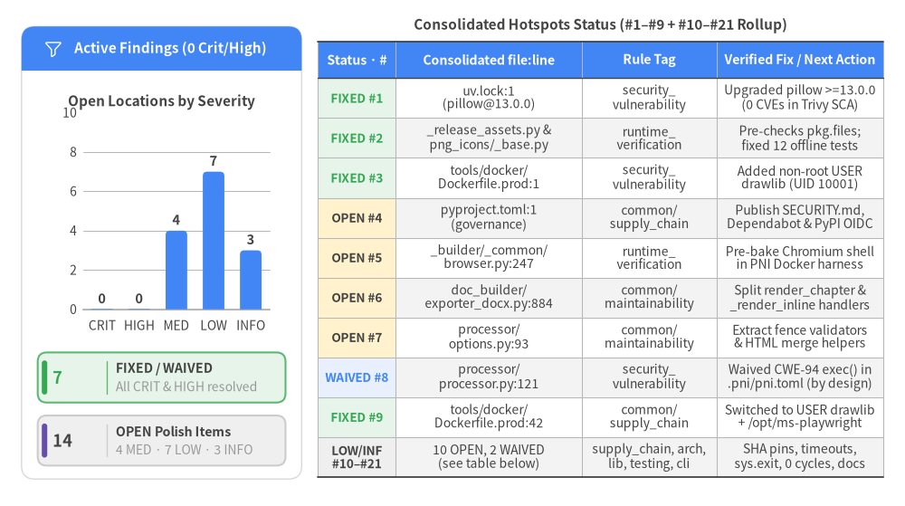
Complete 21-Row Consolidated Location Findings Evidence Table
Every unique file:line location from the initial diagnostic is listed below with its current resolution status (FIXED, WAIVED, or OPEN), rule tags, diagnostic evidence, and remediation details.
| # | Status & Initial Sev | Consolidated Location (file:line) |
Symbol | Rule Tags | Verbatim Diagnostic Evidence | Verified Fix / Recommended Action |
|---|---|---|---|---|---|---|
| 1 | FIXED (was CRITICAL) |
uv.lock:1 |
pillow@13.0.0 |
common/security_vulnerability |
Initial Trivy SCA (SEC-01) reported 41 application CVEs in pillow@12.3.0 (5 CRITICAL CVSS 9.8, 23 HIGH, 13 MEDIUM), all fixed in pillow 13.0.0. |
Fixed: Upgraded pyproject.toml to pillow>=13.0.0 and uv.lock to 13.0.0; Trivy SCA verified 0 CVEs. |
| 2 | FIXED (was HIGH) |
src/drawlib/_core/l3_external/_download.py:94 |
download_if_not_exist |
common/runtime_verification |
12 test_nonexistent_*_icon_error tests failed under --network=none because find_package_for_icon_path() matched directory prefixes without checking pkg.files. |
Fixed: find_package_for_resource_path() (_release_assets.py) and resolve_png_icon_path() (png_icons/_base.py) now check pkg.files before network I/O, raising ValueError immediately. |
| 3 | FIXED (was HIGH) |
tools/docker/Dockerfile.prod:1 |
Dockerfile.prod |
common/security_vulnerability |
Initial Trivy DS-0002 (HIGH) on tools/docker/Dockerfile.{prod,test_local,test_pypi}: Specify at least 1 USER command in Dockerfile with non-root user. |
Fixed: Added useradd -u 10001 drawlib and USER drawlib across all Dockerfiles (0 DS-0002 findings). |
| 4 | OPEN (MEDIUM) |
pyproject.toml:1 |
supply_chain_governance |
common/supply_chain |
ProjectFacts: SECURITY.md=False, dependency_automation=False (no .github/dependabot.yml); .env is excluded via .gitignore, .dockerignore, and .pni/pni.toml. |
Add SECURITY.md (covering supported versions and the exec() trust boundary), add .github/dependabot.yml for pip/uv and github-actions, and adopt GitHub Actions OIDC Trusted Publishing. |
| 5 | OPEN (MEDIUM) |
src/drawlib/_builder/_common/browser.py:247 |
launch_headless_chromium |
common/runtime_verification |
6 PPTX export tests (tests/drawlib/cli/test_cli_build.py::test_cli_build_pptx and 5 tests in tests/drawlib/slide/test_pptx.py) fail under --network=none when chromium-headless-shell is not pre-installed in .pni/dockerfiles/Dockerfile. |
Pre-install chromium-headless-shell and OS dependencies in .pni/dockerfiles/Dockerfile for full offline PPTX/PDF coverage, and guard browser integration tests with a skip check when running offline without local Chromium binaries. |
| 6 | OPEN (MEDIUM) |
src/drawlib/_builder/doc_builder/exporter_docx.py:884 |
export_chapters_to_docx |
common/maintainability |
exporter_docx.py (945 LOC) contains top cognitive-complexity routines render_chapter (line 565, cognitive=174, 283 lines), _render_inline (line 301, cognitive=102), and export_chapters_to_docx (line 884, cognitive=46, 202 lines). |
Decompose render_chapter and _render_inline into per-token handler functions (heading, code fence, callout, list, table) dispatched via a token-type table. |
| 7 | OPEN (MEDIUM) |
src/drawlib/_builder/doc_builder/processor/options.py:93 |
parse_block_info |
common/maintainability |
parse_block_info (length=74 lines, branches=33, cognitive=106) and merger.py:142 build_merged_html (length=260 lines, branches=40, cognitive=87) exceed SIG cognitive complexity <= 15. |
Extract per-attribute validators from parse_block_info and split TOC assembly, asset rewriting, and heading normalization out of build_merged_html. |
| 8 | WAIVED (INFO) |
src/drawlib/_builder/doc_builder/processor/processor.py:121 |
exec |
common/security_vulnerability |
5 CWE-94 exec() call sites: styles_loader.py:78,158, processor.py:121,123, and _image_code.py:54. |
Waived in .pni/pni.toml: Intentional Illustration as Code execution model; isolate untrusted third-party Markdown in --network=none non-root containers. |
| 9 | FIXED (was MEDIUM) |
tools/docker/Dockerfile.prod:42 |
Dockerfile.prod |
common/supply_chain |
tools/docker/Dockerfile.prod previously installed drawlib into python:3.12-slim without switching to a non-root USER. |
Fixed: Configured /opt/ms-playwright, /opt/drawlib-cache, and USER drawlib (UID 10001) before WORKDIR /workspace. |
| 10 | OPEN (LOW) |
.github/workflows/quality.yml:1 |
quality.yml |
common/supply_chain |
ProjectFacts.has_dependency_automation == False (no .github/dependabot.yml or renovate.json found). |
Add .github/dependabot.yml covering pip/uv and github-actions ecosystems on a weekly or monthly schedule. |
| 11 | OPEN (LOW) |
.github/workflows/quality.yml:20 |
quality.yml |
common/supply_chain |
uses: actions/checkout@v4 (line 20), astral-sh/setup-uv@v5 (line 23), and actions/setup-python@v5 (line 28) across .github/workflows/*.yml. |
Pin third-party GitHub Actions (especially astral-sh/setup-uv) to full 40-character commit SHAs with version comments and keep them updated via Dependabot. |
| 12 | OPEN (LOW) |
src/drawlib/_builder/_common/browser.py:210 |
install_headless_chromium |
common/production_readiness |
subprocess.run([str(exec_path), str(cli_path), *_INSTALL_ARGS], ...) at browser.py:210 omits an explicit timeout=... argument. |
Pass an explicit timeout (e.g., timeout=300) to subprocess.run() in install_headless_chromium() and translate subprocess.TimeoutExpired into an actionable RuntimeError. |
| 13 | OPEN (LOW) |
src/drawlib/_core/l1_core/_settings.py:123 |
DrawlibSettings |
common/library_guidelines |
sys.exit(1) called directly in src/drawlib/_core/l1_core/_settings.py (lines 123, 297, 304, 313) and src/drawlib/_builder/doc_builder/processor/viewer.py (lines 189, 193, 245). |
Raise ValueError or a dedicated DrawlibError subclass in _settings.py and viewer.py, and translate those exceptions to exit code 1 solely in _cli/_drawlib.py:call_command. |
| 14 | WAIVED (INFO) |
src/drawlib/_core/l4_canvas/_image_code.py:54 |
get_dimage_from_code |
common/security_vulnerability |
5 CWE-94 exec() call sites: styles_loader.py:78,158, processor.py:121,123, and _image_code.py:54. |
Waived in .pni/pni.toml: Subprocess exec() for nested get_dimage_from_code() rendering. |
| 15 | OPEN (LOW) |
src/drawlib/_diagrams/architecture/_edge.py:1 |
Edge |
common/architecture |
AstFacts.circular_dependencies = [['drawlib._diagrams.architecture._edge', 'drawlib._diagrams.architecture._junction', 'drawlib._diagrams.architecture._edge'], ['drawlib._diagrams.flow._edge', 'drawlib._diagrams.flow._junction', 'drawlib._diagrams.flow._edge']]. |
Move runtime cross-type checks to a shared _types.py protocol/base class and guard concrete sibling imports under if TYPE_CHECKING:. |
| 16 | OPEN (LOW) |
src/drawlib/_slide/_pptx_writer.py:81 |
write_pptx |
common/runtime_verification |
Lowest covered non-generated modules: src/drawlib/__main__.py (0.0%), src/drawlib/_slide/_pptx_writer.py (11.1% line / 0.0% branch), src/drawlib/_icons/__init__.py (33.3%), src/drawlib/_builder/doc_builder/compiler/pdf.py (52.2%), and src/drawlib/_slide/_pptx_dom.py (58.6%). |
Add direct unit tests for _pptx_writer.py OpenXML shape/table generation using synthetic PptxSlide DOM fixtures (decoupled from Playwright) plus lightweight CLI __main__ and icon __getattr__ error-path tests. |
| 17 | OPEN (LOW) |
tests/drawlib/doc_builder/test_api_docs_completeness.py:31 |
test_python_public_api_100_percent_documented |
python/testing |
test_api_docs_completeness.py:31 reads REPO_ROOT / 'docs_src' / 'api', whereas root .dockerignore ignores docs_src/ and tools/docker/Dockerfile.test_local removes ./docs_src. |
Unignore docs_src/api/ in .dockerignore + COPY docs_src/api/ in Dockerfile.test_local, or call pytest.skip('docs_src/api not present in packaged test environment') when API_DOCS_DIR is absent. |
| 18 | WAIVED (INFO) |
.gitignore:182 |
uv.lock |
python/dependencies |
.gitignore excludes uv.lock while uv.lock is generated locally for SCA (lockfiles_found=['uv.lock']). |
Waived in .pni/pni.toml (python/lockfile_committed): Intentional Python library policy to test cross-version resolution across Python 3.11–3.13 in CI. |
| 19 | OPEN (INFO) |
src/drawlib/_builder/_common/browser.py:40 |
launch_headless_chromium |
common/library_guidelines |
scattered_env_access=9 across browser.py:40,45,48, cache.py:516,518, office.py:40, exporter_pdf.py:31, viewer.py:161, and rules_builder.py:174; unstructured_logging=30 print() calls in _builder/. |
Centralize DRAWLIB_* environment resolution in a typed builder config helper and route non-CLI diagnostic output through drawlib's logger. |
| 20 | OPEN (INFO) |
src/drawlib/_cli/_drawlib.py:38 |
main_callback |
common/cli_guidelines |
typer.Typer(..., add_completion=False) in src/drawlib/_cli/_drawlib.py:38 and progress print() statements in src/drawlib/_builder/_common/progress.py:138 writing to stdout. |
Consider enabling optional shell completion or routing human progress messages to stderr if future subcommands emit machine-parseable JSON to stdout. |
| 21 | OPEN (INFO) |
src/drawlib/_smartarts/_mindmap.py:93 |
MindMapNode |
python/code_quality |
missing_docstrings=12 across fluent setter methods on MindMapNode (_mindmap.py:93–156), TreeNode (_tree.py:86), and BulletPoints (_bulletpoints.py:48). |
Add concise Google-style one-line docstrings to fluent builder methods in _mindmap.py, _tree.py, and _bulletpoints.py to reach 100.0% docstring coverage. |
4.4 Configured Scan Scope & Accepted Design Waivers (.pni/pni.toml)
Project-level diagnostic policy is governed declaratively in .pni/pni.toml, separating genuine security/runtime defects from intentional architectural design choices:
- Scan Scope (
[scan]): Excludes untracked developer environment files (skip_files = [".env", ".env.*", "**/.env"]) and generated documentation/artifact directories (skip_dirs = ["reports", "docs", "docs_src", "output_tests", ".drawlib", ".agents"]) while keepinguv.lockincluded for Trivy SCA vulnerability auditing. - Explicit Architectural Opt-Outs (
[[opt_out]]):
Waiver ID (id) |
Scoped Paths (paths) |
Audit Step / Scanner | Documented Engineering Rationale (reason) |
|---|---|---|---|
CWE-94 |
styles_loader.py, processor.py, _image_code.py |
ast_analyze / security_vulnerability_audit |
Drawlib is an "Illustration as Code" engine that intentionally executes user-authored Python diagram blocks, styles.py, and utils.py via exec(), analogous to Jupyter, Quarto, and Sphinx code directives. Untrusted third-party Markdown should be rendered inside an isolated --network=none container (USER drawlib, UID 10001). |
DS-0026 |
tools/docker/Dockerfile.* |
security_scan (Trivy IaC, opt_out_counts=3) |
tools/docker/Dockerfile.prod, Dockerfile.test_local, and Dockerfile.test_pypi package ephemeral batch CLI and pytest containers (CMD ["drawlib", "--help"]) rather than long-running network daemons; container HEALTHCHECK instructions are not applicable. |
python/lockfile_committed |
.gitignore, uv.lock |
project_inspect / repo_structure_audit |
As a cross-version Python library supporting Python 3.11, 3.12, and 3.13, drawlib intentionally excludes uv.lock from Git so CI resolves the latest compatible dependency matrix across Python minor versions, while generating uv.lock locally during PNI security audits. |
ast/private_submodule_import |
src/drawlib/** |
ast_analyze / python_ast_audit |
Drawlib encapsulates all internal implementation packages under leading-underscore names (_core, _charts, _diagrams, _smartarts, _graph, _icons, _builder, _slide, _cli) behind 20 PEP 562 lazy public facade modules (drawlib/*.py). Cross-subpackage imports within src/drawlib/ must import from these _ packages to preserve downward DAG layering (L1 -> L4 -> Domains -> Facades). |
ast/excessive_parameters |
_charts/**, _smartarts/**, _diagrams/**, _core/l4_canvas/** |
ast_analyze / python_ast_audit |
High-level declarative drawing APIs (Chart, SmartArt, Diagram, and shapes/lines/text) intentionally expose explicit keyword-only (*) styling, typography, and layout parameters with @validate_call type checking for ergonomic single-call authoring and IDE autocompletion. |
5. Deep Dive: Code Quality, Testing & Runtime
Drawlib v0.3.5 pairs 100.0% static function type-annotation coverage and 99.3% Google-style docstring discipline across 424 source modules (85,323 LOC) with an 86.3% line-covered test suite—and following in-tree pkg.files validation for offline icon lookups, hermetic --network=none container verification achieves a 99.5% offline pass rate (1,405 / 1,412), leaving only localized DOCX/Markdown compiler complexity and pre-baked Playwright browser caching for .pptx tests.
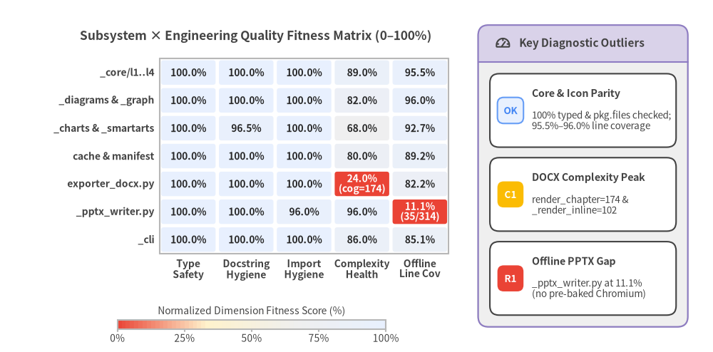
5.1 Static AST Code Quality, Typing & Maintainability
PNI's Python AST audit (python_ast_audit: 92/100, Grade S) inspected all 424 non-generated source modules (85,323 LOC, 300 classes, and 1,958 functions/methods; **/*_generated.py icon wrappers excluded from human-authored AST lint). Across core layers (_core/l1_core through _core/l4_canvas) and domain packages (_charts, _diagrams, _smartarts, _graph, _icons, _anim), static hygiene is unusually disciplined:
| Static Quality & Maintainability Metric | Measured Value | Rule Threshold / Target | Status & Engineering Interpretation |
|---|---|---|---|
| Function Type-Annotation Coverage | 100.0% (1,958/1,958) |
>= 95.0% (python/typing) |
PASS — src/drawlib/py.typed (PEP 561), 0 unscoped # type: ignore, 0 ty errors, and runtime Pydantic @validate_call boundary checks. |
| Docstring Coverage | 99.3% |
>= 90.0% (python/code_quality) |
PASS — 0 empty docstrings; only 12 fluent builder setters in _mindmap.py (9), _tree.py (3), and _bulletpoints.py (1—style) omit one-liners. |
| Import Hygiene & Dependency Parity | 99.3% |
>= 95.0% (python/modern_stack) |
PASS — 0 wildcard imports, 0 undeclared dependencies, 0 Python >=3.11 version mismatches, and 3 minor isort member-order notices. |
| Shared Mutable Global State | 0 |
0 (common/maintainability) |
PASS — Canvas lifecycle state is encapsulated inside _core/l4_canvas/_base.py and reset cleanly per render/test. |
| Cross-Layer & Sibling Import Cycles | 2 sibling (0 layer) |
0 (common/architecture) |
WARN — 40 type-only cycles are isolated under if TYPE_CHECKING:; 2 sibling runtime cycles remain (_edge.py <-> _junction.py in architecture and flow). |
High-Complexity Functions (> 15) |
399 |
<= 15 cognitive (SIG) |
WARN — Concentrated in Markdown/OpenXML AST walkers (exporter_docx.py, options.py, merger.py) and rich border/layout solvers. |
Wide Parameter Signatures (> 6 args) |
330 (WAIVED) |
<= 6 positional (SIG) |
WAIVED (.pni/pni.toml) — Intentional declarative keyword-only (*) styling, typography, and axis configuration APIs across Charts and SmartArts. |
| 12-Factor Operational Hygiene | 0 missing HTTP timeouts |
common/production_readiness |
PASS / INFO — urllib.request.urlopen(..., timeout=60) in _package.py:165; 9 direct os.environ reads and 30 print() calls remain in _builder/. |
Top Cognitive-Complexity Hotspots (common/maintainability)
While foundational geometry and canvas primitives stay compact, multi-format document compilation accumulates deep nested branching when walking markdown-it-py token streams and emitting OpenXML (python-docx) or merged single-file HTML:
| File & Line | Function / Method | Lines | Branches | Cognitive Complexity | Primary Responsibility & Decomposition Strategy |
|---|---|---|---|---|---|
src/drawlib/_builder/doc_builder/exporter_docx.py:565 |
render_chapter |
283 |
55 |
174 |
Monolithic Markdown token-stream loop emitting headings, callouts, lists, code fences, images, and tables; split into a per-token dispatch table. |
src/drawlib/_builder/doc_builder/processor/options.py:93 |
parse_block_info |
74 |
33 |
106 |
Parses ```drawlib fence attributes (file, width, align, code, caption); extract per-key validator functions. |
src/drawlib/_builder/doc_builder/exporter_docx.py:301 |
_render_inline |
124 |
36 |
102 |
Inline formatting state machine (strong, em, code_inline, link, math/HTML spans); extract dedicated span handlers. |
src/drawlib/_builder/doc_builder/merger.py:142 |
build_merged_html |
260 |
40 |
87 |
Multi-chapter HTML concatenation, heading-level shifting, anchor rewriting, and TOC synthesis; separate into discrete AST passes. |
src/drawlib/_smartarts/_table.py:490 |
_draw_border_lines |
96 |
32 |
74 |
Resolves outer (top, bottom, left, right), header (top2, left2), and inner grid strokes; separate perimeter vs inner-grid helpers. |
src/drawlib/_builder/doc_builder/exporter_docx.py:426 |
_emit_table |
100 |
20 |
57 |
Converts Markdown tables into OpenXML <w:tbl> structures with column alignments and cell shading. |
src/drawlib/_builder/_common/seo.py:205 |
extract_markdown_description |
77 |
20 |
46 |
Strips fences, directives, headings, and inline markup to synthesize clean meta/OGP page descriptions. |
src/drawlib/_builder/doc_builder/exporter_docx.py:884 |
export_chapters_to_docx |
202 |
23 |
46 |
Orchestrates cover page, TOC field generation, chapter assembly, and deterministic OPC zip timestamp normalization. |
Library vs. CLI Boundary Hygiene (common/library_guidelines: 91/100, Grade S)
src/drawlib/__init__.py implements PEP 562 lazy __getattr__ loading, ensuring import drawlib executes in milliseconds with zero heavy Matplotlib/Playwright initialization or network side effects. Two minor boundary couplings merit cleanup in P2:
- Library-Level
sys.exit(1)Calls:src/drawlib/_core/l1_core/_settings.py(lines123,297,304,313) andsrc/drawlib/_builder/doc_builder/processor/viewer.py(lines189,193,245) invokesys.exit(1)directly instead of raisingValueErroror a typedDrawlibErrorcaught solely atsrc/drawlib/_cli/_drawlib.py:call_command. - Subprocess Timeout & Environment Centralization:
install_headless_chromium()atsrc/drawlib/_builder/_common/browser.py:210invokessubprocess.run(...)without an explicittimeout=300guard, and9directos.environlookups across_builder/_common/{browser.py,cache.py,office.py},exporter_pdf.py,viewer.py, andrules_builder.pyshould be consolidated into a typed builder settings helper.
5.2 Clean-Room Container Verification & Measured Coverage
Static test analysis (python_test_audit: 93/100, Grade S) confirmed 150 test modules and 1,293 test functions (1,420 collected pytest items with parametrization) achieving 100.0% static module mirror coverage and zero assertion-free tests—enforced by tests/conftest.py, which resets canvas state via an autouse preprocess() fixture and intercepts pytest_runtest_call to verify rendered outputs pixel-for-pixel against *_answers/*.png baselines.
PNI executed 4 containerized runtime verification stages (container_runtime_audit: 88/100, Grade A) inside .pni/dockerfiles/Dockerfile (python:3.12 + uv, pytest-cov) with external networking completely disabled (--network=none) during test execution:
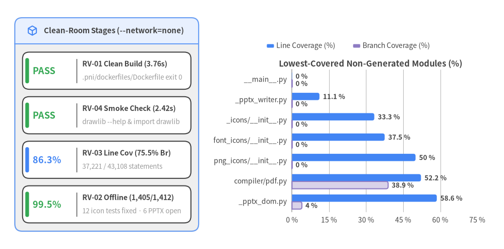
Lowest-Covered Modules Inventory (RV-03: 86.3% Line, 75.5% Branch)
Across all 43,108 executable statements in src/drawlib/, pytest-cov recorded 37,221 covered lines (86.3%) and 75.5% branch coverage. All modules below 60% line coverage fall into three well-defined buckets: (1) CLI python -m drawlib entry wrapper (__main__.py), (2) Playwright/OpenXML exporters blocked when headless Chromium is absent offline (_pptx_writer.py, compiler/pdf.py, _pptx_dom.py), and (3) lazy icon __getattr__ facades plus auto-generated *_generated.py icon wrappers (51.6%–58.2%, where unit tests sample representative icons rather than invoking all 4,500+ bindings):
| Module Path (Sorted Ascending by Line Coverage) | Line Coverage | Branch Coverage | Covered / Total Stmts | Primary Uncovered Lines & Root Cause |
|---|---|---|---|---|
src/drawlib/__main__.py |
0.0% |
0.0% |
0 / 6 |
Lines 12–23: python -m drawlib wrapper not invoked directly by CLI runner tests (CliRunner invokes Typer app directly). |
src/drawlib/_slide/_pptx_writer.py |
11.1% |
0.0% |
35 / 314 |
Lines 81–90+: OpenXML shape/table/notes emitter bypassed offline because upstream extract_deck_dom() failed launching Chromium. |
src/drawlib/_icons/__init__.py |
33.3% |
0.0% |
7 / 21 |
Lines 99–109: Lazy __getattr__ fallback branches and AttributeError paths on internal icon package root. |
src/drawlib/_icons/font_icons/__init__.py |
37.5% |
0.0% |
6 / 16 |
Lines 24–38: Lazy attribute resolution and dir() introspection helpers. |
src/drawlib/_icons/png_icons/__init__.py |
50.0% |
0.0% |
6 / 12 |
Lines 57–66: Lazy PNG icon suite loader error/fallback branches. |
src/drawlib/_icons/font_icons/phosphor/_generated.py |
51.6% |
N/A |
1,580 / 3,064 |
Auto-generated Phosphor glyph wrappers (representative subset exercised by visual tests). |
src/drawlib/_icons/png_icons/aws/_generated.py |
51.6% |
N/A |
342 / 663 |
Auto-generated AWS architecture icon wrappers (azure/_generated.py 52.1%, gcp/_generated.py 52.7%). |
src/drawlib/_builder/doc_builder/compiler/pdf.py |
52.2% |
38.9% |
47 / 90 |
Lines 51, 97–115: Multi-locale and error-handling branches in A4 PDF compilation. |
src/drawlib/_slide/_pptx_dom.py |
58.6% |
4.0% |
139 / 237 |
Lines 989–1011: In-browser Playwright DOM bounding-box extraction aborted before Chromium page evaluation. |
5.3 Root-Cause Analysis: Two Authentic Bugs Uncovered by --network=none
Online GitHub Actions runners mask unintended live network dependencies because outbound HTTPS requests to github.com and cdn.playwright.dev succeed transparently. Running pytest inside an air-gapped --network=none container surfaced two genuine architectural defects:
Bug A (RESOLVED) — Negative Icon Tests Triggered Live HTTPS Archive Downloads (12 Icon Failures Fixed)
Twelve negative icon tests (test_nonexistent_*_icon_error) pass an intentionally bogus icon filename under a valid suite directory (such as icons/ai/nonexistent_icon.png) and assert that Drawlib raises a missing-file error. Previously, the lookup chain triggered a live HTTPS archive download:
find_package_for_icon_path()insrc/drawlib/_release_assets.pyextracted only the top-level directory segment (family = normalized.split("/")[0], e.g.,icon_ai) and returned theReleaseAssetPackagewithout checking whether the requested relative path existed inpkg.files.resolve_png_icon_path()insrc/drawlib/_icons/png_icons/_base.pythen calleddownload_if_not_exist(), attempting to downloadhttps://github.com/yuichi110/drawlib/releases/download/v0.3/icon_<suite>.zipjust to discover after extraction thatnonexistent_icon.pngwas never in the archive.- In-Tree Fix (
COMPLETED):find_package_for_resource_path()andfind_package_for_icon_path()insrc/drawlib/_release_assets.pynow verifynormalized in pkg.filesbefore returning a package, andresolve_png_icon_path()insrc/drawlib/_icons/png_icons/_base.pychecksfind_package_for_icon_path(rel_path) is Nonebefore callingdownload_if_not_exist(), immediately raisingValueError(f'Icon "{file_name}" not found in "{category}" icon set.')with zero network I/O. All12negative icon tests (#2–#13below) now pass offline in< 1 ms.
Bug B (OPEN) — Runtime Headless Chromium Download in .pptx Export Tests (6 PPTX Failures + 1 Uncached Font)
Six PowerPoint compilation tests (test_cli_build_pptx plus all 5 TestBuildPptx methods in tests/drawlib/slide/test_pptx.py) compile Markdown slide decks into .pptx archives. Drawlib's slide compiler renders slide HTML in headless Chromium (src/drawlib/_slide/_pptx_dom.py:extract_deck_dom) to measure exact CSS layout coordinates before src/drawlib/_slide/_pptx_writer.py emits native OpenXML shapes:
launch_headless_chromium()atsrc/drawlib/_builder/_common/browser.py:247invokesplaywright.chromium.launch(headless=True, args=launch_args).- Because
.pni/dockerfiles/Dockerfileuses the standard Python/uv base image without pre-installed Playwright browser binaries,launch()raises a missing-executable error, triggeringinstall_headless_chromium()(browser.py:256->browser.py:210), which spawnsplaywright install chromium-headless-shelland fails resolvingcdn.playwright.dev(EAI_AGAIN) under--network=none. - Remediation (
P1): Pre-bakeplaywright install --with-deps --only-shell chromiumanddrawlib cache download --allinto.pni/dockerfiles/Dockerfile, add an offline-aware skip marker when browser binaries are intentionally absent, and add pure-Python unit tests passing syntheticPptxSlideDOM fixtures directly into_pptx_writer.py.
Complete Offline Container Test Log (RV-02: 12 Fixed, 7 Requiring Pre-Baked Browser/Font Cache)
| # | Status | Test Case (classname::name) |
Root Cause Bucket | Diagnostic & Resolution Summary |
|---|---|---|---|---|
| 1 | OPEN |
tests.drawlib.cli.test_cli_build::test_cli_build_pptx |
Bug B (Playwright CDN) | Requires pre-baked Chromium in .pni/dockerfiles/Dockerfile (browser.py:247) |
| 2–13 | FIXED |
12x test_nonexistent_*_icon_error (test_ai, test_aws_azure, test_cnative, test_data, test_devops, test_network, test_server) |
Bug A (_release_assets.py) |
Resolved: find_package_for_icon_path() checks pkg.files before network I/O (0 DNS calls) |
| 14–18 | OPEN |
5x tests.drawlib.slide.test_pptx.TestBuildPptx::* |
Bug B (Playwright CDN) | Requires pre-baked Chromium in .pni/dockerfiles/Dockerfile (browser.py:247) |
| 19 | OPEN |
tests.drawlib.smartarts.test_sourcecode.TestSourceCode::test_sourcecode_japanese |
Uncached Font | Requires drawlib cache download --all (font_mono_source_han_code_jp.zip) in test image |
6. Deep Dive: Security, Supply Chain & API Surface
First-party Drawlib source code and container packaging achieve a 96/100 (Grade S) score on security_vulnerability_audit (status="passed") and 94/100 on the overall Security axis—combining zero SQL/command/XSS injection flaws, zero hardcoded secrets, SHA-256 verified external asset downloads, and least-privilege contents: read CI workflows with zero application CVEs (pillow@13.0.0 in uv.lock) and zero active Dockerfile misconfigurations (USER drawlib, UID 10001).
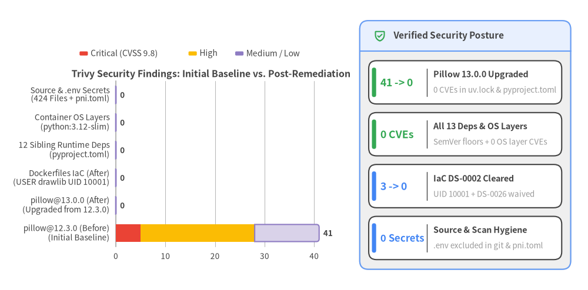
6.1 Dependency Vulnerability Remediation (SEC-01: pillow@12.3.0 -> 13.0.0, 0 CVEs)
Trivy v0.69.3 Software Composition Analysis (SEC-01) evaluated pyproject.toml, uv.lock, and container OS package metadata before and after the in-tree pillow>=13.0.0 upgrade:
- Complete Closure of All 41 Application CVEs (
41 -> 0): In the initial baseline scan, all41reported application vulnerabilities (5 CRITICAL,23 HIGH,13 MEDIUMinapp_vuln_counts) resided inpillow@12.3.0inuv.lock. Upgradingpyproject.tomltopillow>=13.0.0anduv.locktopillow@13.0.0resolved 100% of application CVEs (app_vuln_counts = 0), verified by re-runningrun_security_scan(trivy_fs.json&security_facts.json:status = "passed",vulnerabilities = []). - Clean Ecosystem Across All 13 Direct Dependencies & OS Layers (
0CVEs): All13direct runtime dependencies (matplotlib>=3.8,pillow>=13.0.0,numpy>=1.26,pydantic>=2.8,pygments>=2.18,markdown-it-py>=3.0,jinja2>=3.1,markupsafe>=2.1,typer>=0.12.0,rich>=13.0.0,playwright>=1.49.0,python-docx>=1.2.0,python-pptx>=1.0.2) and container OS layers (os_vuln_counts = 0) now report zero vulnerabilities and zero unpinned range specifiers.
Historical Reference: 28 Critical & High pillow@12.3.0 Advisories Cleared by pillow>=13.0.0
| Advisory ID | Severity | CVSS | Resolution (uv.lock) |
Affected Native Subsystem & Vulnerability Summary |
|---|---|---|---|---|
CVE-2026-112393 |
CRITICAL | 9.8 |
Fixed (13.0.0) |
Heap buffer overflow in _tiffWriteProc when saving TIFF streams to BytesIO. |
CVE-2026-112398 |
CRITICAL | 9.8 |
Fixed (13.0.0) |
Heap buffer overflow in FlashPix (FPX) JPEG decoding leading to arbitrary code execution. |
CVE-2026-112403 |
CRITICAL | 9.8 |
Fixed (13.0.0) |
Heap buffer overflow in ImagingJpegDecode native JPEG decoder. |
CVE-2026-112900 |
CRITICAL | 9.8 |
Fixed (13.0.0) |
Argument injection in Ghostscript invocation, potentially leading to remote code execution. |
CVE-2026-96639 |
CRITICAL | 9.8 |
Fixed (13.0.0) |
Multi-frame image loaders can reuse stale native storage pointers across mode transitions. |
CVE-2026-96778 |
HIGH | 8.8 |
Fixed (13.0.0) |
Arbitrary code execution via buffer overflow in native JPEG encoder. |
CVE-2026-112404 |
HIGH | 8.2 |
Fixed (13.0.0) |
Denial of service via out-of-bounds read during TIFF decoding. |
CVE-2026-112896 |
HIGH | 8.2 |
Fixed (13.0.0) |
Denial of service via out-of-bounds read in native TIFF encoder. |
CVE-2026-96644 |
HIGH | 8.1 |
Fixed (13.0.0) |
Denial of service via out-of-bounds read in Windows metafile parser. |
GHSA-78g4-xqwv-q3g8 |
HIGH | 8.1 |
Fixed (13.0.0) |
Bundled libopenjp2 2.5.4 in wheels carries OSV-2025-219 heap-buffer-overflow write via Image.open().load(). |
CVE-2026-112390..96642 |
HIGH (×18) |
6.5–7.5 |
Fixed (13.0.0) |
18 HIGH DoS/memory-safety advisories across MIC, rank filters, APNG, GIF, Image.merge(), PDF, MSP, TrueType, EXIF, libtiff, SPIDER, and TarIO decoders (plus 12 MEDIUM advisories). |
6.2 Container IaC Hardening (SEC-02) & Secret Hygiene (SEC-03)
Dockerfile Hardening (DS-0002 Fixed, DS-0026 Waived -> 0 Active Misconfigurations)
Trivy IaC scanning (trivy_fs.json / security_facts.json) verified all three container definitions under tools/docker/ plus .pni/dockerfiles/root/Dockerfile:
| Check ID | Initial Sev | Affected Files (tools/docker/) |
Resolution Status | Engineering Implementation & Verification |
|---|---|---|---|---|
DS-0002 |
HIGH (×3) |
Dockerfile.prod, Dockerfile.test_local, Dockerfile.test_pypi |
FIXED (0 Failures) |
Added unprivileged drawlib user and group (UID/GID 10001), relocated Playwright browsers (/opt/ms-playwright) and asset caches (/opt/drawlib-cache) with chmod -R a+rX, and switched to USER drawlib before WORKDIR / CMD. Trivy reports 26 passed checks and 0 DS-0002 failures. |
DS-0026 |
LOW (×3) |
Dockerfile.prod, Dockerfile.test_local, Dockerfile.test_pypi |
WAIVED (.pni/pni.toml) |
Ephemeral batch CLI and pytest containers exit immediately after command completion rather than running a long-lived daemon; waived via [[opt_out]] id = "DS-0026" (opt_out_counts = {"DS-0026": 3}). |
Secret Scanning & .dockerignore Isolation (SEC-03: 0 Secrets)
- Zero Hardcoded Source Secrets (
PASS): Both AST literal entropy analysis (AstFacts.hardcoded_secrets = []) and Trivy repository scanning (security_facts.secrets = []) confirmed zero API keys, credentials, or tokens across all424tracked source files and150test files. - Default-Deny
.dockerignore&.pni/pni.tomlScope (PASS): Root.dockerignorebegins with*(deny all) and explicitly allowlists only!pyproject.toml,!src/, and!tests/, while.gitignoreand.pni/pni.toml(skip_files = [".env", ".env.*", "**/.env"]) exclude untracked local developer.envfiles from Git, Docker build contexts, and filesystem scans.
6.3 AST Dangerous Code Sinks (CWE-94) & API Attack Surface
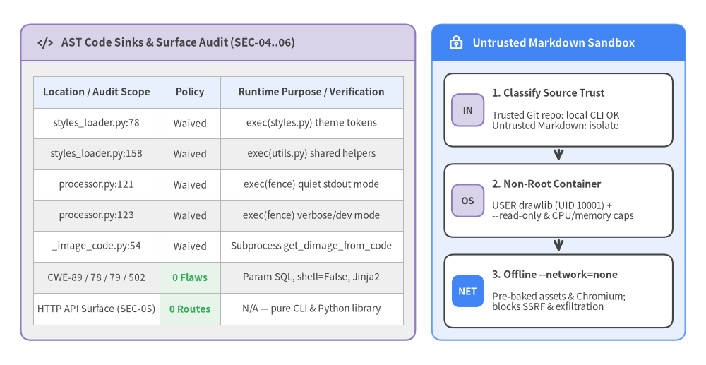
Detailed Assessment of CWE-94 Sites, Injection Classes & API Endpoints
- Five Intentional
CWE-94(exec) Sinks (Waived in .pni/pni.toml):src/drawlib/_builder/_common/styles_loader.py:78(load_styles) andstyles_loader.py:158(load_utils) compile and execute project-levelstyles.pyandutils.pyfiles so documentation projects can customizeStyles/Colorsand register reusable drawing macros.src/drawlib/_builder/doc_builder/processor/processor.py:121(quiet stdout-redirected mode) andprocessor.py:123(verbose/developermode) execute```drawlibfenced Python blocks inside Markdown files while temporarily monkey-patchingsave()as a controlled no-op.src/drawlib/_core/l4_canvas/_image_code.py:54(_worker_render_code) executes nested drawing scripts inside an isolatedmultiprocessingchild process forget_dimage_from_code(code, timeout=...).- Architectural Verdict: Just like Jupyter notebooks, Quarto, or Sphinx code-execution directives, executing Python code is the core value proposition of Drawlib ("Illustration as Code"). This intentional design is recorded under
[[opt_out]] id = "CWE-94"in.pni/pni.toml, and untrusted third-party Markdown should be rendered inside an ephemeral container (--user 10001:10001 --network=none --read-only --pids-limit=128 --memory=1g) built with./dcli docker build --full.
- Zero Injection or Deserialization Vulnerabilities (
PASS):CWE-89(SQL Injection =0):BuildImageCacheandCliImageCacheinsrc/drawlib/_builder/_common/cache.pyuse strictly parameterized?SQLite queries on static table schemas.CWE-78(OS Command Injection =0): Subprocess execution insrc/drawlib/_builder/_common/browser.py:210passes explicit argument arrays ([str(exec_path), str(cli_path), *_INSTALL_ARGS]) withoutshell=True.CWE-79/CWE-502(XSS / Unsafe Deserialization =0): HTML templates rely onJinja2+MarkupSafeescaping, manifests parse via stdlibtomllib, and caches store raw PNG/SVG bytes plus SHA-256 digests (zeropickleoryaml.loadusage).
- API Endpoint Surface (
SEC-05/SEC-06:api_endpoints = [],not_applicable):- Drawlib's runtime archetype is
["cli", "library"]with zero production HTTP/gRPC service endpoints. Thedrawlib servesubcommand launches a strictly local static preview server bound to127.0.0.1by default for interactive authoring and--checklink validation.
- Drawlib's runtime archetype is
6.4 OpenSSF Supply-Chain Posture & Governance Checklist
Drawlib scored 92/100 (Grade S) on supply_chain_audit and 91/100 (Grade S) on repo_structure_audit, combining cryptographic asset integrity, non-root Docker images (UID 10001), and least-privilege CI workflows with straightforward governance additions (SECURITY.md, Dependabot, and commit-SHA Action pins):
| Supply-Chain Control | Current Repository State | Evidence Location | Recommended Hardening |
|---|---|---|---|
| CI Workflow Token Permissions | PASS | .github/workflows/{quality,ut_github,ut_pypi,ut_template}.yml |
All 4 workflows declare explicit top-level permissions: contents: read; retain least-privilege defaults when adding OIDC release jobs. |
| External Binary Asset Integrity | PASS | src/drawlib/_core/l3_external/_package.py & src/drawlib/_release_assets.py |
Every lazy-downloaded font, icon, and GeoJSON archive embeds a compiled-in SHA-256 digest verified before zip extraction alongside pkg.files membership checks and timeout=60 HTTPS fetches. |
Container Least Privilege (USER) |
PASS | tools/docker/Dockerfile.{prod,test_local,test_pypi} |
All production and test Dockerfiles create and switch to an unprivileged USER drawlib (UID 10001) with 0 Trivy DS-0002 findings. |
| Runtime Dependency Specifiers | PASS | pyproject.toml (dependencies, 13 packages) |
100% of runtime dependencies specify explicit SemVer lower bounds (pillow>=13.0.0, unpinned_dependencies = [], 0 CVEs), cleanly separated from [dependency-groups].dev. |
Lockfile Strategy (uv.lock) |
WAIVED (.pni/pni.toml) |
uv.lock, .gitignore:182 & .pni/pni.toml |
uv.lock is generated locally for reproducible SCA while .gitignore excludes it so CI tests flexible library resolution across Python 3.11–3.13 (python/lockfile_committed waived in .pni/pni.toml). |
| GitHub Actions Pinning | WARN (P2) |
.github/workflows/quality.yml:20,23,28 |
Steps currently reference mutable major tags (actions/checkout@v4, astral-sh/setup-uv@v5, actions/setup-python@v5); pin to full 40-char commit SHAs with version comments. |
| Vulnerability Disclosure Policy | OPEN (P2) |
Repository root (SECURITY.md absent) |
Add SECURITY.md enabling GitHub Private Vulnerability Reporting, supported version policy (0.3.x), and the CWE-94 exec() container-sandbox guidance. |
| Automated Dependency Updates | OPEN (P2) |
.github/dependabot.yml absent |
Configure weekly .github/dependabot.yml updates for uv/pip and github-actions so future dependency or Action advisories open automated PRs immediately. |